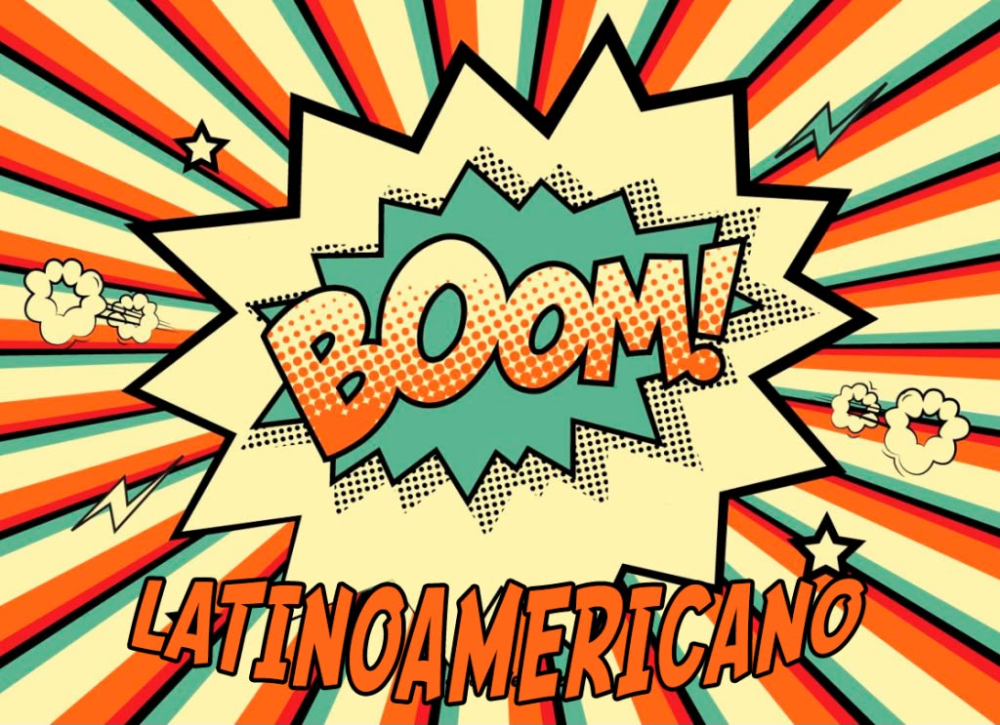
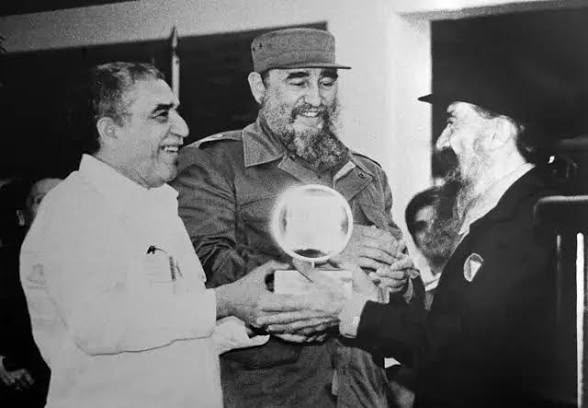
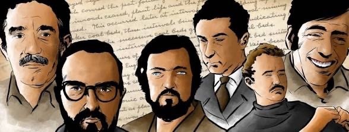
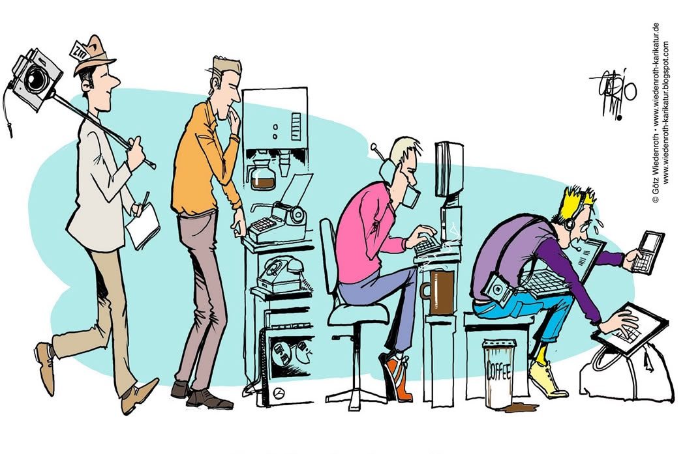
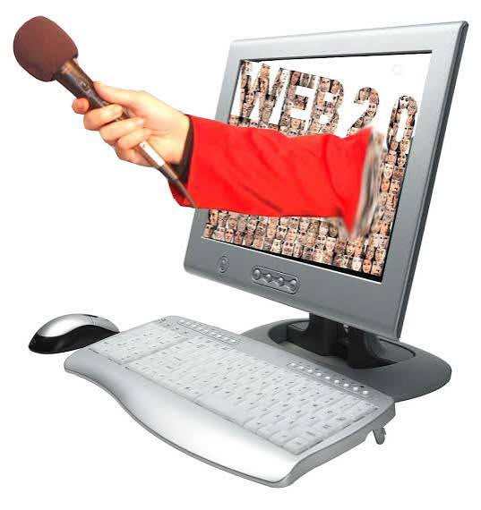
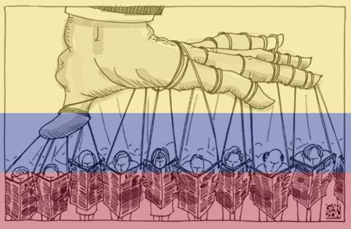
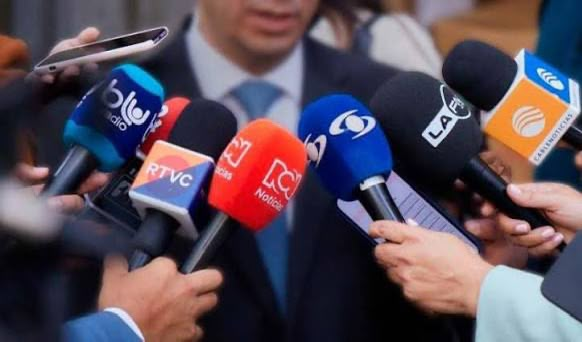

La palabra que transforma el mundo
Un recorrido por las historias, las ideas y las voces que han construido la literatura y el periodismo latinoamericano.
Desplácese para leer¿Por qué contar esto?
La literatura y el periodismo comparten una misma materia prima: la palabra puesta al servicio de comprender lo que ocurre.
Este blog nace como trabajo universitario con una pregunta sencilla: ¿cómo ha contado América Latina sus historias por medio de sus periodistas y novelistas? Recorremos el Boom latinoamericano, la historia general del periodismo, su transformación digital y con especial atención, el caso colombiano.
Distinguimos tres planos: los hechos históricos, el análisis y la interpretación. Cada artículo incluye sus fuentes.
Leer, buscar, filtrar
Ningún artículo coincide. Pruebe con otra palabra o cambie la categoría.
El Boom latinoamericano
Novelas de los años sesenta que ampliaron el público de la literatura latinoamericana. Cuatro nombres suelen citarse primero; la crítica discute los límites del grupo.

(pendiente)

(pendiente)

(pendiente)
De la imprenta a la pantalla
Explore la evolución del periodismo etapa por etapa. Con el teclado puede moverse con las flechas.

(pendiente)
El periodismo en la era de Internet
Verificación, desinformación, narrativa multimedia e inteligencia artificial: los retos del periodismo actual.

(pendiente)
(pendiente)
Leer: Del papel a la pantallaLeer: Desinformación y verificación
El periodismo en Colombia
Medios y hechos clave. Las cifras sobre agresiones a periodistas pueden consultarse en la FLIP.

(pendiente)

(pendiente)
Leer: La prensa colombiana nace con la IndependenciaLeer: Libertad de prensa y violencia